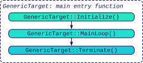
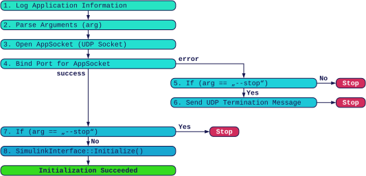
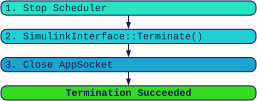

Application Overview
The Generic Target application is a standalone executable that runs on the target computer. The name of the
executable is set with the property
targetProductName; the directory to which the
application is deployed is set with
targetSoftwareDirectory. By default, the
application is located at ~/GenericTarget/GenericTarget.
Application Directory
The directory in which the application is located has the following structure:
| Directory / File | Description |
|---|---|
.vscode | Metadata for VSCode that enables debugging the application with VSCode. |
build | Created during the compilation process. Object files and dependency files are first created from the source files, which are then linked together into the application. The dependency files ensure that when a source or header file changes, only those source files that depend on the changed files are recompiled. |
code | Source code of the application, including the Generic Target Core, the generated code from Simulink, and optional custom code. |
data | Created by the application to store data recording files, if data recording is used, i.e., if there are Write To File blocks in the model. |
GenericTarget | The executable. The name can be changed via the property targetProductName. |
Makefile | On the target computer, the software is compiled with the g++ compiler using the make tool, which executes the commands from the Makefile. The Makefile compiles all source files in the code/ directory. |
README.md | A readme file with additional information about the application. |
Application Arguments
Arguments passed to the application at start-up are printed as part of the application information and are also accessible at runtime through the Target Stats / Application Arguments block.
Application Flowchart
The application follows a simple lifecycle: after an initialization phase, the main loop runs until a termination signal is received, after which the termination phase is executed. All three phases are described in detail below.

Initialization
After the application is started, the initialization phase is executed. Its steps are described below.

1. Parse Arguments (arg)
The arguments passed to the application at start-up are parsed and evaluated.
2. Print Application Information
Basic information about the system and the application is printed, for example the Generic Target version, the
compiler version, and the configured tasks and sample rates. All output is written to the standard error
stream; when the application is started with GT.GenericTarget.Start, the stream is redirected
to a log file in the target software directory.
3. Open AppSocket (abstract UNIX socket)
The Generic Target application uses an abstract UNIX socket, called AppSocket, whose system-wide unique name is set via the targetSocketName property. Binding this socket acts as a lock and ensures that only one instance of the application runs on the system.
4. SimulinkInterface::Initialize()
The Simulink model is initialized; all initialization callbacks of the model and its driver blocks are invoked. If an error occurs during initialization, it is reported on the standard error stream and the application terminates.
5. Start Scheduler
Finally, the scheduler is started. It runs in a high-priority master
thread and ensures that all step() methods of the Simulink model are invoked with their correct
sample times.
Main Loop
After the initialization phase, the main loop is entered. It runs in the main thread and waits for a
termination signal, for example SIGINT or SIGTERM sent by the operating system, which
interrupts the loop and triggers the termination phase.
Termination
During the termination phase, all open files are closed and dynamically allocated memory is released. The individual steps are:

1. Stop Scheduler
The scheduler is stopped. step() calls that are already in flight are allowed to complete, but no
new step() calls are started.
2. SimulinkInterface::Terminate()
The termination function of the Simulink model is called. All termination callbacks of the driver blocks are invoked as well.
3. Close AppSocket
The AppSocket is closed and the Generic Target application terminates.